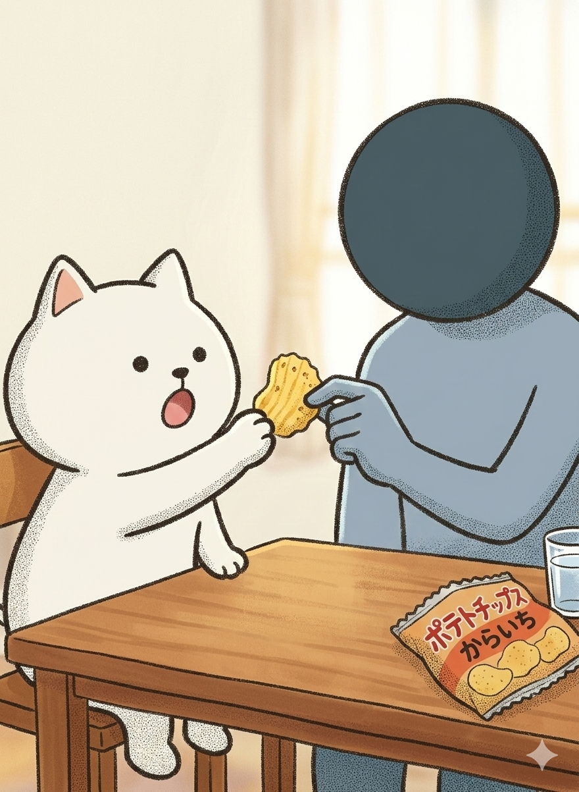
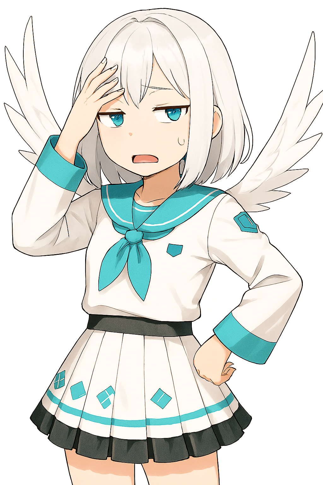

ねぇみんな！！じゃくとうp主ってなんか色々似てない？

確🦀

確かにです！
ちょっと三人でさ、じゃくとうp主の調査しない？
賛成！！！！
賛成です！
―――
場面転換。
物陰。
コードネームは？
ターゲットJ（じゃく）
ターゲットU（うp主）です！

ミッション開始！
―――
リビング。

ねえなんか視線感じない？

気のせいだろ。作者は常に見られる存在だ
その発言がもう怪しい
物陰
今の聞きましたか！？
思考回路一致率62％
上がってきたね～
ーーーー
第一検証：ツッコミ速度
この物語の主人公は僕だ
は？
0.3秒。
物陰
ほぼ同時反応型です！
速い
やっぱ似てる
ーーー
第二検証：煽り耐性
(わざと)じゃくくんって意外とバカだよね
おいやめろ。傷つく。
同時防御反応！
シンクロ率上昇中！
ーーー
第三検証：ポテチの食べ方
テーブルにポテチ設置。
二人が同時にポテチを取る

あ！これ最初に取ったの僕だ！！
いや僕だ！！

……
完全一致
DNAレベルでは？
おいごら。失礼な発言した奴誰だ。
―――
ついに三人が前に出る。

観念しなさい！！
何の話だよ
君たち似すぎ
もしかして兄弟では？
いや違う
全力で否定するな
じゃあなんでこんなに思考回路似てるの？
うｐ主が二やりと笑う
簡単だ

嫌な予感
僕がじゃくをモデルにしているからだ
は！？
は？
え？
What!?
待て待て待て
え？
つまり分身！？！？
違うわ！！！
物語上、僕は作者。じゃくは主人公。
主人公は作者の思考が反映されるものだ
主人公は作者の思考が反映されるものだ

え、キモ......
そこは僕に言え
つまり二人は精神的双子ですか？
同一存在説濃厚
やめろ都市伝説みたいに言うな
葵、じっとじゃくを見る。
うｐ主が消えたら、じゃくも消えるの？
空気が少しだけ静まる。
.......
消えない
即答
主人公は作者を超えるために存在している
急に名言出すな。
.....
少し安心した顔。
なんかいい話風になってます！
オチが必要だな
沈黙。
実はな...
まだあるの？
じゃくとはすごい関係を持っているんだ
だからそのすごい関係ってなんですか？
うｐ主が立ち上がる
じゃくとは同じ家で育ったんだ
えええええ！？！？！？！？
その話はまたいつか話すとしようか...(冗談だけど)
うｐ主が部屋から出る
もう何が何だかわかんなぁぁぁぁーーーいい！！！
結論：似ているが謎
そこ自分で言うんですか！？
じゃくとうp主は似ている。
しかし真実はまだ闇の中。